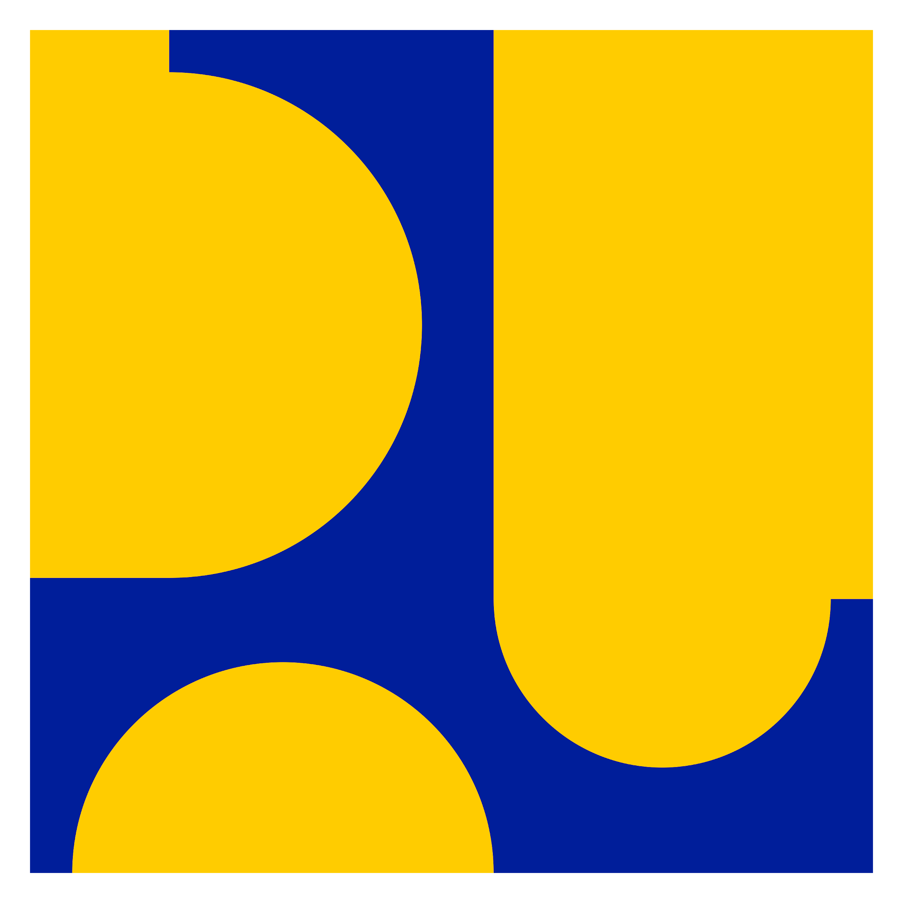

Kementerian PU
Ditjen SDA · Dit. Irigasi & Rawa
Climate Smart Irrigation ·
BBWS Serayu Opak
Refresh Iklim
Beranda
Dashboard Daerah Irigasi + Risiko Iklim
Ciutkan
Pilih Daerah Irigasi
— Semua —
Cluster Informasi GAS
— Semua —
Filter Risiko Iklim
— Semua —
AMAN
WASPADA
SIAGA
KRITIS
Upload GeoJSON / JSON → simpan ke Google Drive
Upload & Simpan
GeoJSON tersimpan
Tampil / Hapus
Memuat daftar dari Google Drive...
Si-Irwan v1.0